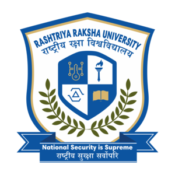

My self: Arunash Kanna.G
18 years old
My native thirukkolur
My name is Arunash Kanna. I am currently pursuing a Bachelor's degree in Criminology and Police Science. I completed my higher secondary education through the National Institute of Open Schooling (NIOS), which is a central government-recognized open school system. Before joining NIOS, I studied from Grade 8 to Grade 11 at a school under the Auroville Foundation, named NESS (New Era Secondary School). Due to personal reasons, I discontinued my studies there and chose the open school path to complete my higher secondary education.
It's my logo. i'm using this logo for All them

My Pic:

My instagram i'd
@arunash kannaMy Phone No: /My Mail i'd
91+9176289369/arunashkanna7@gmail.com
I'm having edit channel also in Youtube and Instagram
Youtube LinkInstagram link
Now i'm Going to explore about my College
 College Linkhttps://rru.ac.in/puducherry-campus/Rashtriya Raksha University is serving the nation as an Institution of National Importance with the vision of imparting security education, as an academic-research-training ecosystem for national security and police education in the country. Hon’ble Prime Minister Shri Narendra Modi during the first convocation of the Rashtriya Raksha University on 12th March 2022 referred RRU as the “Jewel of the Nation that is helping us strengthen the vision of Sashakt Bharat”. Hon’ble Union Home Minister and Minister of Co-operation, Shri Amit Shah while addressing the convocation ceremony at RRU envisioned the University to have campuses in each region and states and accordingly to expand its reach and benefits throughout the Country from this premier institution in the areas of security whereby the security forces, law enforcement agencies and youths aspirants of respective regions and states may advance in the areas of security as mandated under sec of the RRU Act 2020. Rashtriya Raksha University, has established a campus at the Puducherry Institute of Hotel Management & Catering Technology [PIHMCT] and the permanent campus at the Puducherry Technological University. The courses are tailor-made according to the need and requirement for the police aspirants’ youths of Puducherry with the intent of delivering world class teaching, training, and research through programs that include criminology, police administration, police science, fitness management, forensic and clinical psychology, cyber security, industrial and corporate security. The curriculum is designed for degree, diploma, and certificate programs. These courses inculcate the desirable skills and mindset in the police aspirants and other stakeholders who are willing to build their careers in the field of internal and national security. The campus will also emphasize inculcating high standards of patriotism, discipline, ethics, and moral values in the youth of the UT. Graduates from the RRU Puducherry campus will be prepared for careers in the forces as officers, analysts, and strategists throughout the government agencies, the national security apparatus, and the private sectors. The teaching and training shall be provided by experts who are competent, dedicated, and highly qualified in their respective fields with the vision of transforming the students into employable individuals and ready to be absorbed into the security forces and private sectors in the region of Puducherry, Karaikal, Mahe, and Yanam.